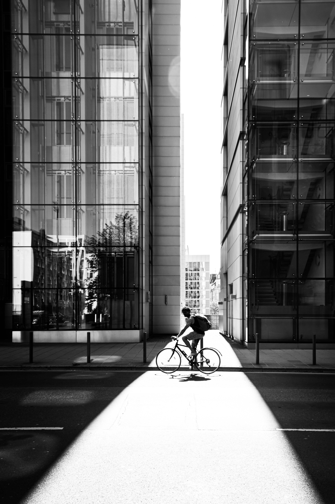

Single Speed, Single Life.
More recently the “fixie” has become a popular alternative among mainly urban cyclists, offering the advantage of simplicity compared with the standard multi-geared bicycle.
Shop Now
A fixed gear drivetrain is more mechanically efficient than any other bicycle drivetrain, with the most direct power transfer from rider to the wheels. Thus, it requires less energy in any given gear to move than a geared bike in the same gear.
One Gear, Many Variations
Stripped-Down Performance
Without the added parts required for a fully geared drive train—derailleurs, shifters, cables, cable carriers, multiple chain rings, freewheel hub, brazed-on mounting lugs—a fixed gear bicycle weighs less than its geared equivalent.
A collection built for regular commuters
Riders unknown to each other commonly greet each other when on bikes. As in many subcultures, this feeling of belonging is a key factor in recruiting and retaining participants.
“I like to ride. Fixed gear. No brakes. Can’t stop. Don’t want to, either.”
Premium Rush (2012)
-

All who cycle are my friends
2020.4.27
A rider from Stockholm interviewed for an article about the phenomenon notes that riding a bike imparts a feeling of freedom to the rider…
-

Swedish riders and enthusiasts
2020.3.11
There are also several bicycle clubs throughout Sweden with a fixed-gear niche. Komet Club Rouler is a club based in Gothenburg, annually arranging Svart Kat…
-

The Australian fixie culture
2020.2.29
Online stores in Australia ship partially-assembled bikes directly to consumers, considerably undercutting prices at typical brick and mortar stores…